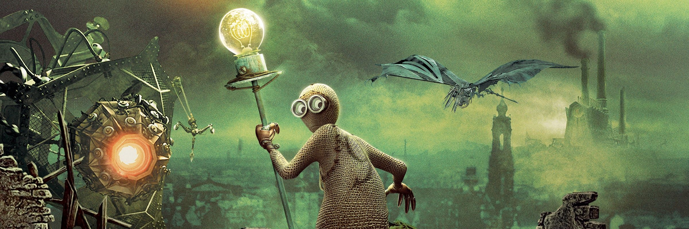

9 (2009) is a post-apocalyptic CGI film created by Shane Acker and produced by Jim Lemley, Tim Burton, Timur Bekmambetov and Dana Ginsburg. Shane Acker is an absolute genius. He developed the "ragdoll" concept and desolate world of 9 through an 11-minute student animated short in 2005. After getting some big names on board, he got the green light to turn the short into a full movie (90 minutes). Despite it's unbudging rating of 57% on rotten tomatoes, it packs a solid cast (Elijah Wood, John C. Reilly, Christopher Plummer, and more) and epic soundtrack by Danny Elfman. This movie is almost 12 years old already!
So, as the title suggests, there are 9 ragdolls (affectionately refered to as stitchpunks) in the film.
Click a number to discover more about each character.
(Hey how do I center this list?)
The 9 fandom runs rampant, featutring a
Discord,
Subreddit,
Deviantart 9-Club, and several individuals immersed in
9 theories.
Some crazy fans have gone out of their way to make elaborate costumes (cosplays) of the beloved characters. Here is my 9 cosplay for example!
Whether you've been traumatized by this film as a kid or just discovering this masterpiece for the first time, I welcome you.